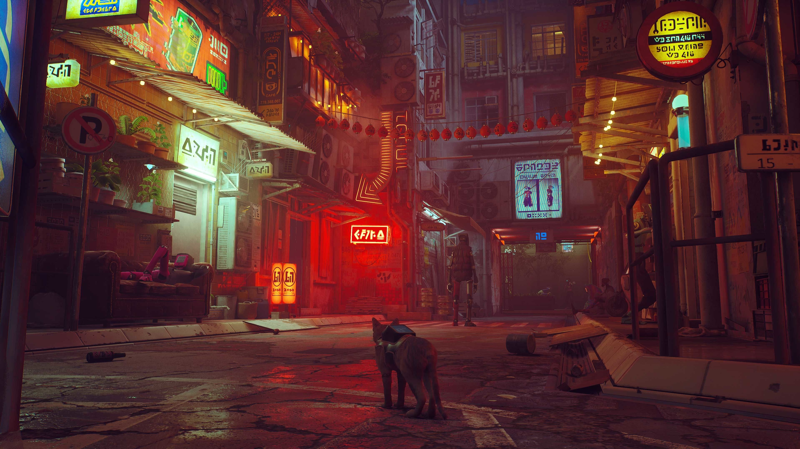
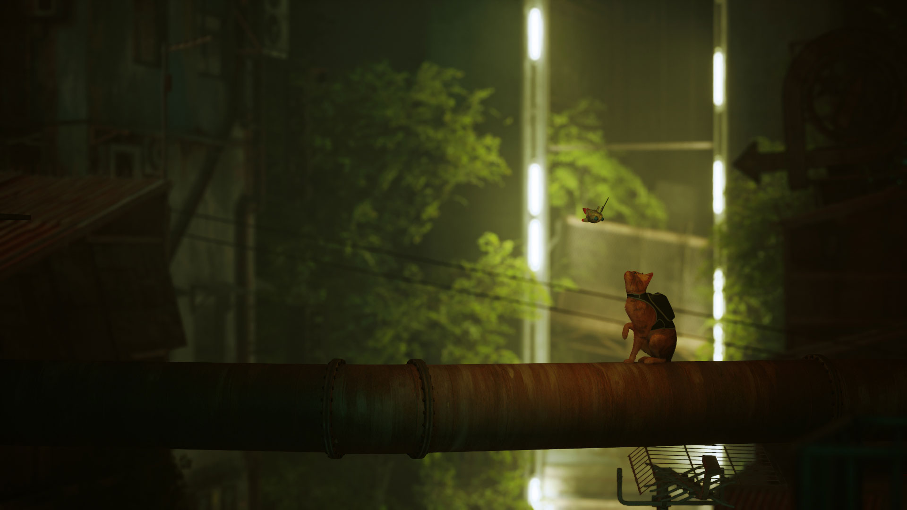

Stray is a 2022 adventure video game developed by BlueTwelve Studio and published by Annapurna Interactive. The story follows a stray cat who falls into a walled city populated by robots, machines, and mutant bacteria, and sets out to return to the surface with the help of a drone companion called B-12. The game is presented through a third-person perspective. The player traverses by leaping across platforms and
climbing up obstacles, and can interact with the environment to open new paths. Using B-12, they can store items found throughout the world,
and hack into technology to solve puzzles necessary to progress the narrative. Throughout the game, the player must evade the antagonistic Zurks and Sentinels, both of whom will attempt to kill them.
The game's development began in 2015, led by BlueTwelve Studio founders Colas Koola and Vivien Mermet-Guyenet, who wanted to pursue an independent project after working at Ubisoft Montpellier. They partnered with Annapurna Interactive to publish the game, known by its
working title HK Project. Stray was influenced aesthetically by Kowloon Walled City, which the developers felt could be appropriately explored by a cat. The gameplay experience was specifically inspired by the developers' cats, Murtaugh and Riggs, and the team studied several images and videos of cats for research. They found that playing as a cat led to interesting level design opportunities, though they also
encountered challenges in balancing design and gameplay. The team decided to populate the world with robot characters, which further influenced the development of the narrative and backstory.
Gameplay
Stray is a third-person adventure game. The player controls a stray cat, who traverses by leaping across platforms and climbing up obstacles, and they can open new paths by interacting with the environment, such as climbing in buckets, overturning paint cans, operating a vending machine, and clawing at objects. They must solve puzzles to progress the narrative, often involving moving obstacles.[6] The game also presents several optional activities for the player, such as sleeping, meowing, and nuzzling up to non-player characters, all of which often elicit a response.Some of the game's levels have open world elements, allowing the player to roam at their freedom.
The player is accompanied by a drone companion named B-12, who assists by translating the language of other characters, storing items found throughout the world, providing light, and hacking into various technologies to open paths and solve puzzles.Throughout the game, the player finds several of B-12's memories, providing more context for the story behind the world;most of these memories are optional, but some are unlocked through story progression. The player can also collect badges, including several optional throughout the world, which are then displayed on the cat's backpack.
The game world is populated by robots, who often employ the player to locate objects that reveal more information and progress the narrative.Some robots provide optional tasks, such as Morusque, who will play songs upon being provided with music sheets found around the slums.The player can interact with most robots in the game world. Stray features two types of enemies who can kill the player: Zurks, a large, mutated bacteria that can swarm and devour the cat;and Sentinels, security drones who will attempt to shoot the player upon spotting them. For a portion of the game, the player can use a Defluxor attached to B-12 to destroy the Zurks, though it can only be used for a limited time before B-12 overheats and requires a brief charge. The player can evade Sentinels by avoiding their sight lines, indicated by glowing lights.
Plot
Chapter 1
While a group of four stray cats trek through the ruins of an abandoned facility, one becomes separated from the others after jumping on a loose pipe, falling into a chasm, and finding itself trapped in an unpopulated underground city. The cat soon finds a lab where it helps download an artificial intelligence into the body of a small drone, who calls itself B-12. It explains that it previously helped a scientist but much of its memory was corrupted and needs time to recover. B-12 promises to help the cat return to the surface and accompanies it further into the city. As they travel farther, the pair discover that, while the city is completely devoid of human life, their robotic servants, Companions, remain. In the time of humanity's absence, the Companions have grown self-aware and have built their own society among the ruins of the city, but they likewise are trapped underground. The ruins are also infested with Zurks, mutant creatures that have evolved to devour both organic life and robots.
Chapter 2
The pair meet Momo, who is a member of the Outsiders, a group of Companions dedicated to finding a way to the surface. With the Outsiders's help, the cat and B-12 are able to proceed to the Midtown sector of the city. There, they locate Clementine, another Outsider who plans to steal an atomic battery to power a subway train that leads to the surface. The trio are caught and arrested by the Sentinels, but the cat is able to help them all escape prison. Clementine stays behind to mislead the Sentinels while the cat and B-12 escape on the subway, which takes them to the city control center. B-12 finally recovers all of its memories. It reveals that it was originally a human scientist who attempted to upload their own consciousness into a robot body, but the process went awry until the cat arrived. B-12 also remembers that the city, Walled City 99, was built to shelter humanity from a catastrophe on the surface, but a plague eventually wiped out the entire human population. Realising that humanity's legacy now lies with the Companions and the cat, B-12 sacrifices itself to open the blast doors over the city, exposing it to sunlight which kills the Zurks and deactivates the Sentinels. With the main exit unsealed, the cat leaves the city and reaches the surface. As the cat leaves, a screen near the exit flickers and activates.
Development
Chapter 1
BlueTwelve Studio founders Colas Koola and Vivien Mermet-Guyenet known as Koola and Viv, respectively began working on Stray in 2015 as they wanted to pursue an independent project after working at Ubisoft Montpellier. They maintained a development blog for the game, then known as HK Project. After they shared some footage from the game on Twitter, Annapurna Interactive reached out in April 2016 to publish the project; Koola and Mermet-Guyenet had only developed some "visual scenes" by that time, but had a strong direction for the final project.Annapurna, which had not published any games by the time the deal was formed, assisted in building the company over the years, providing occasional feedback for the game but largely leaving creative freedom to the developers.Funding for the studio was confirmed in April 2017, and the development team grew to five by the end of 2017. From early in development, Koola and Mermet-Guyenet knew that they wanted to maintain a small team of developers, as they prefer working with direct communication;the small team meant that the game's scope reduced over time, with focus directed towards elements that the developers considered important. After revealing the game, the team wanted to focus on production and only begin marketing when development was nearing completion; they found that the reception to the reveal added to the pressure of delivering a polished experience.The game utilises Unreal Engine 4.
Chapter 2
Stray was heavily influenced aesthetically by Kowloon Walled City; Koola and Mermet-Guyenet liked that the city was constructed organically, and found it interesting to approach as artists. They designed some graphical tests of the environments and buildings,and found that the city was the "perfect playground for a cat" due to the various paths and views. The development team found that gameplay as a cat led to interesting level design opportunities, particularly regarding platforming and puzzle elements.They encountered artistic and technical challenges in balancing interesting game design with the open world environment, as items that are typically decorative in other such as pipes and air conditioning are designed as explorable paths in Stray. The in-game location Antvillage allowed the team to experiment with vertical game design, as well as providing several path options for the player. The team decided to avoid standard platforming challenges early in development, after watching players consistently missing jumps, which they thought "didn't feel cat-like"; according to producer Swann Martin-Raget, the movements of a cat feel smoother, which led the team to create its guided movement system while still allowing for freedom of choice.The team found that the sounds and vibrations of the DualSense controller added to the physicality and interactivity of playing as a cat, and the low camera angle leads to deeper observation of the environment than a human protagonist.
Reception
| Review scores | |
|---|---|
| Review scores | Score |
| EGM | 4/5 |
| Game Informer | 8/10 |
| GameSpot | 9/10 |
| GamesRadar+ | 4.5/5 |
| IGN | 8/10 |
| Jeuxvideo.com | 15/20 |
| PC Gamer (US) | 82/100 |
| PCGamesN | 9/10 |
| The Guardian | 5/5 |
| Video Games Chronicle | 5/5 |